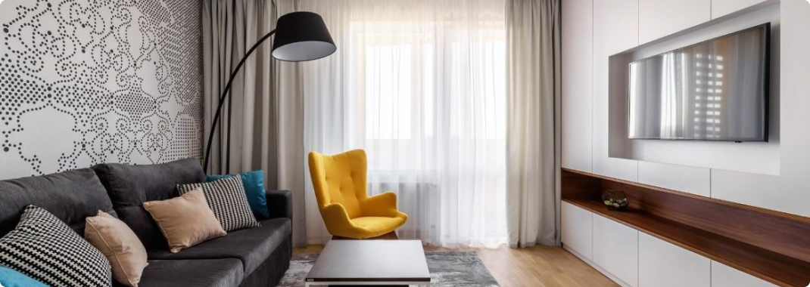

Introduction
In the realm of table settings, few combinations exude the timeless elegance and versatility of blue and white dinnerware. With a rich history spanning continents and cultures, this classic pairing continues to captivate hearts and enhance dining experiences around the world.
History and Origins
The allure of blue and white dinnerware traces back centuries, with origins deeply rooted in ancient civilizations.
From Chinese porcelain of the Tang dynasty to Delftware crafted in 17th-century Netherlands, blue and white ceramics have adorned tables of emperors, aristocrats, and commoners alike. This enduring popularity transcends borders and epochs, embodying a timeless aesthetic appreciated across generations.
Symbolism and Significance
Beyond mere aesthetics, blue and white dinnerware often carries symbolic significance. In many cultures, blue symbolizes tranquility, while white represents purity and simplicity. Together, they evoke a sense of harmony and balance, making them ideal for both casual gatherings and formal occasions. Whether adorning a rustic farmhouse table or gracing a lavish banquet, blue and white dinnerware adds a touch of sophistication and refinement to any setting.
Versatility in Design
One of the most appealing aspects of blue and white dinnerware is its versatility in design. From intricate floral patterns to minimalist motifs, there exists a myriad of styles to suit every taste and aesthetic preference. Whether you prefer the delicate brushstrokes of traditional Chinese ceramics or the crisp lines of contemporary Scandinavian designs, there's a blue and white pattern to complement any décor scheme.
Practicality and Durability
In addition to their aesthetic appeal, blue and white dinnerware is prized for its practicality and durability . Crafted from materials such as porcelain, stoneware, or earthenware, these dishes are not only beautiful but also resilient enough to withstand the rigors of daily use. enough to withstand the rigors of daily use. Their timeless appeal ensures they remain a cherished staple in kitchens and dining rooms for years to come. enough to withstand the rigors of daily use.
Tips for Styling
When styling with blue and white dinnerware, consider the following tips to create a cohesive and visually appealing tablescape:
- Mix and match patterns for added visual interest.
- Pair blue and white dishes with complementary table linens and accessories.
- Experiment with layering different textures and finishes to create depth.
- Incorporate natural elements such as fresh flowers or greenery to add a touch of freshness.
- Don't be afraid to play with contrast by adding pops of color for a modern twist.
Conclusion
In a world where trends come and go, blue and white dinnerware stands as a timeless classic, transcending cultural boundaries and generations. With its rich history, symbolic significance, and unmatched versatility, it continues to enchant and inspire, proving that some things truly never go out of style.Whether adorning the tables of royalty or gracing the humble abodes of everyday families, blue and white dinnerware remains a cherished symbol of elegance and sophistication.
Як правильно обрати ліжко?
При виборі ліжка в інтернет магазині Вам в першу чергу потрібно вибрати матеріал. Найбільшою популярністю користуються дерев'яні ліжка, виготовлені з вільхи, ясена чи дуба. Такі моделі чудово прикрасять Вашу спальню у квартирі чи приватному будинку. Для орендованих квартир, під здачу, більше підійде ліжко з металу, так як воно просто «не вбивається», а також має дуже демократичну ціну.
Для Вашої зручності ліжко може комплектуватись висувними ящиками або підйомним механізмом. Ящики можуть бути з одного боку ліжка або з двох. Також є моделі, з висувними ящиками спереду. Ліжка з підйомним механізмом, це відмінне рішення, для невеликих кімнат, вони дозволяють заощадити простір і мають велику нішу для зберігання постільної білизни. Всі дерев'яні ліжка комплектуються буковими ламелями. Спальне місце з ламельною основою може витримувати навантаження до 150 кг на одне спальне місце. Відстань між ламелями, у своїй має бути 2,5-3 див. Кожне ліжко може бути забарвлене у різні кольори: чорні, білі, сірі, венге, у кольорі горіх. Завдяки цьому ліжко можна підібрати під будь-який інтер'єр.
Оформлення вітальні. Які м'які меблі краще вибрати?
Вітальня – це основна кімната у кожному будинку. Саме вона служить для прийому гостей, проведення часу всією сім'єю та просто для відпочинку у приємній теплій атмосфері. Оформляючи свій будинок та вітальню зокрема, всі намагаються зробити її максимально зручною, комфортною та красивою. Основним та центральним елементом оформлення вітальні, як і будь-якої іншої кімнати, є м'які меблі.
Будь-які меблі для вітальні повинні бути не тільки стильними і красивими, але і функціональними. На таких меблів має бути зручно та приємно відпочивати та приймати гостей. Однак сьогодні існує величезна різноманітність найрізноманітніших м'яких меблів для вітальні, яка підходить для кімнат різних розмірів і форм. На чому варто зупинити свій вибір? Як краще оформити свою вітальню, щоб вам було комфортно, а гості хотіли приходити до вас знову та знову?
На сайті інтернет магазину Кровато представлено велику різноманітність м'яких меблів для вітальні, серед яких кожен зможе вибрати для себе найбільш вдалий варіант. У нас ви знайдете:
- Прямі дивани. Такі дивани вважаються класикою. Вони підходять для віталень будь-яких форм та розмірів. Прямий диван виглядає стильно та лаконічно, на ньому зручно відпочивати, приймати гостей або навіть спати. Прямі дивани можуть стояти біля стіни, так і в центрі кімнати. Багато моделей прямих диванів легко розкладаються, перетворюючись на повноцінне спальне місце. Також більшість диванів мають великі та місткі ніші, які є додатковим місцем для зберігання;
- Кутові дивани Кутові дивани вважаються найзручнішими та комфортнішими. Вони ідеально підійдуть для приємного проведення часу в колі сім'ї або друзів. Кутові дивани в основному використовуються для оформлення великих віталень, так як вони займають багато місця, і для кімнат з невеликою площею просто не підійдуть;
- Тахти. Тахта - це одна з варіацій дивана, але стильніша і мінімалістична. Виглядають тахти дуже незвично і можуть підійти для будь-якого інтер'єру. Також тахти більше ніж звичайні дивани підходять для сну, оскільки в їх основі не пружинні блоки, а дерев'яні ламелі або ортопедичні матраци;
- Крісла. Крісло – це особливий предмет інтер'єру. Сучасні дизайнери не часто використовують його, вважаючи застарілим, проте саме крісла створюють особливий затишок та комфорт у будь-якій кімнаті. Сьогодні існує величезна різноманітність класичних та сучасних моделей крісел, що дозволяє кожному відшукати ідеальне крісло для свого будинку;
- Набір меблів. Комплект м'яких меблів – це відмінне рішення для тих, хто хоче меблювати свою вітальню не лише диваном, а й кріслами. Існують набори з одним або двома кріслами, із прямими або кутовими диванами. Основна перевага будь-якого готового меблевого гарнітура – це те, що предмети меблів у ньому ідеально поєднуються один з одним, і вам не потрібно буде витрачати свій час та сили на їхній підбір.
Підбір м'яких меблів для вітальні – це заняття непросте. Однак при виборі та покупці меблів для своєї вітальні пам'ятайте, що якісні м'які меблі повинні бути не тільки красивими, але й зручними для вас і всіх мешканців вашого будинку.